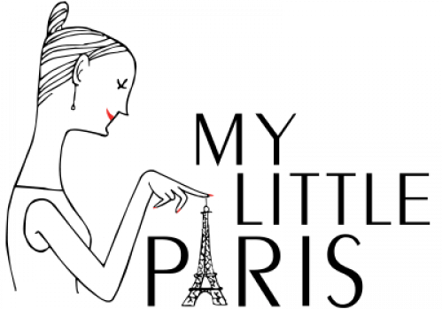

Alexis Zeitoun
Technique, automatisation, systèmes IA.
Télécom Paris (Institut Polytechnique de Paris).
Clément Predo
Stratégie, conseil, formation.
ESSEC.
De deux voix, une seule agence.
Depuis 2023
Dans l'IA avant tout le monde.
On fait de l'IA depuis 2023. Pionniers, à une époque où beaucoup ne comprenaient pas encore. On est toujours là, aujourd'hui, et on ne compte pas s'arrêter là.


Deux trajectoires
Une stratégie, une technique, un seul duo.
- Clément PredoStratégie, conseil et formation. ESSEC.
- Alexis ZeitounTechnique, automatisation et systèmes IA. Télécom Paris (Institut Polytechnique de Paris).
Deux parcours différents, une seule agence : AXEM IA.
Le laboratoire
On teste avant de vendre.
- On teste, en interne, tous les nouveaux outils.
- On observe ce qui marche vraiment, chez nous.
- On ne propose que ce qui a fait ses preuves.
Chaque jour
La veille ne s'arrête jamais.
Chaque jour, veille sur les nouveautés de l'IA. Ils publient plusieurs fois par semaine sur LinkedIn, surtout sur Claude.

Photo générée par IA à partir de nos vraies photos
La preuve
Ce que ça donne, à deux.
+200entreprises accompagnées
+3 000collaborateurs formés
94 292abonnés LinkedIn cumulés
Ils nous font confiance









Et on ne compte pas s'arrêter là.